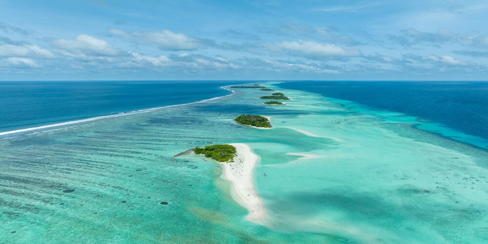
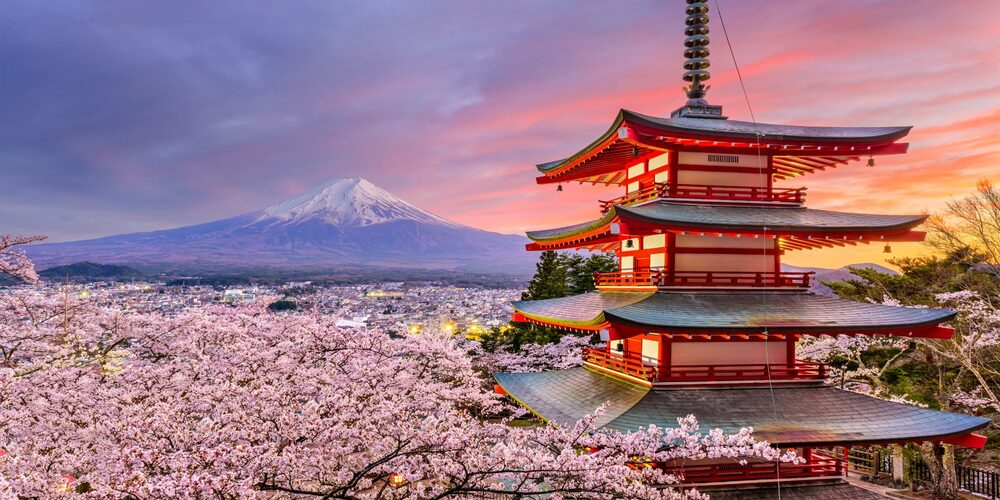
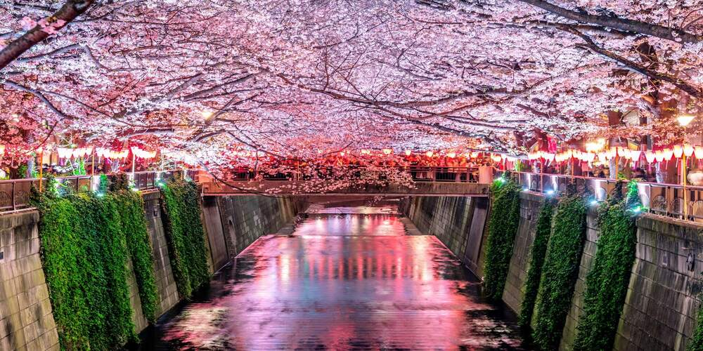
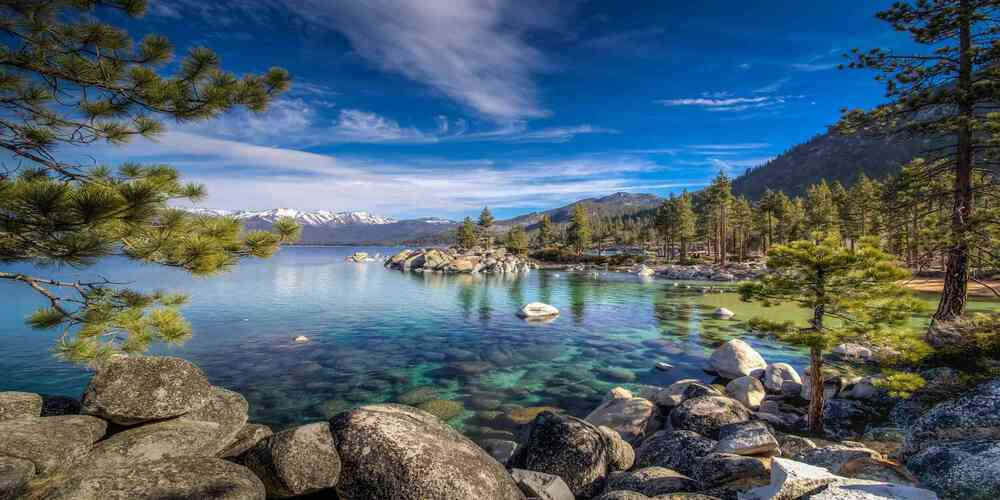
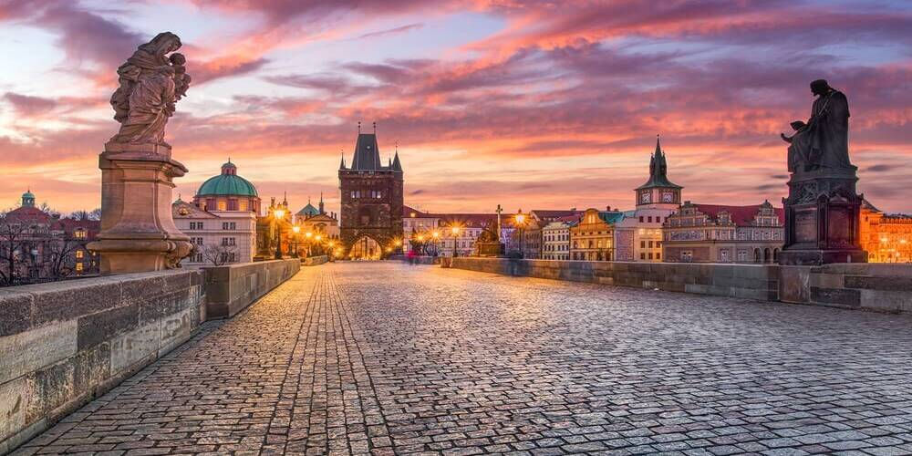
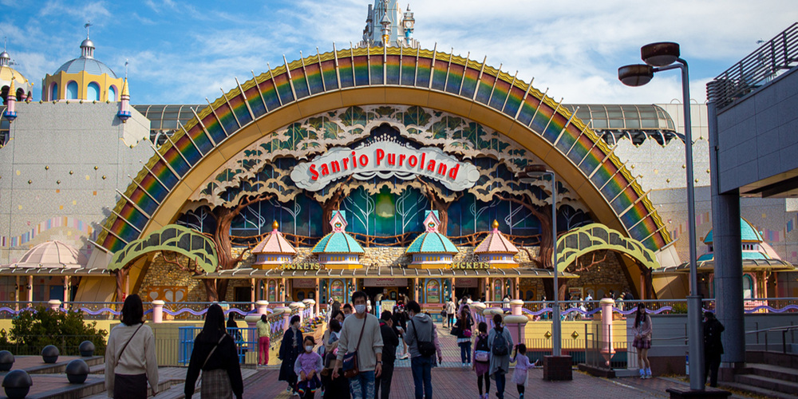
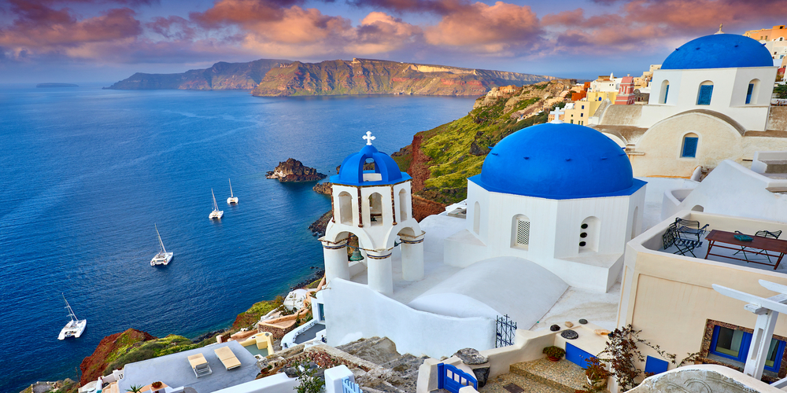
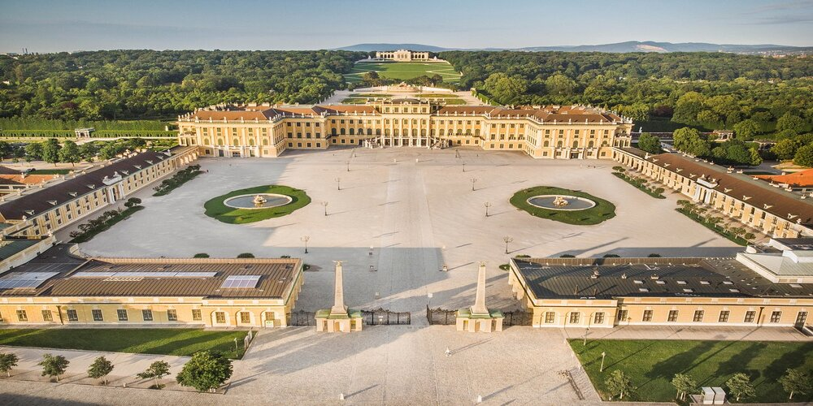
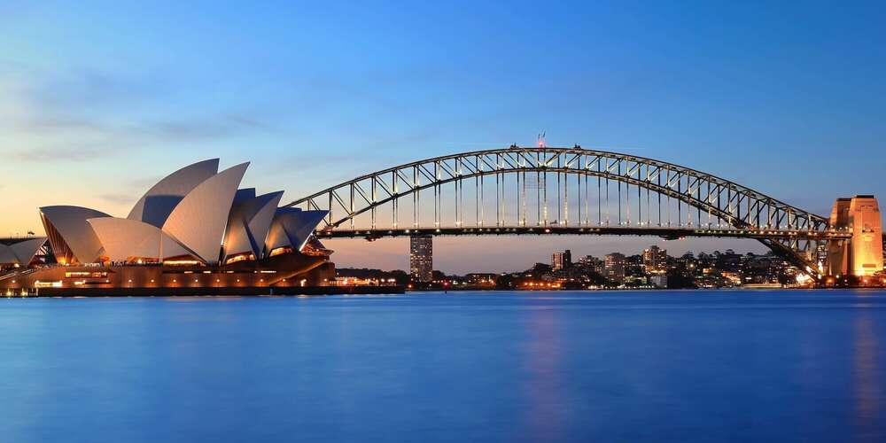
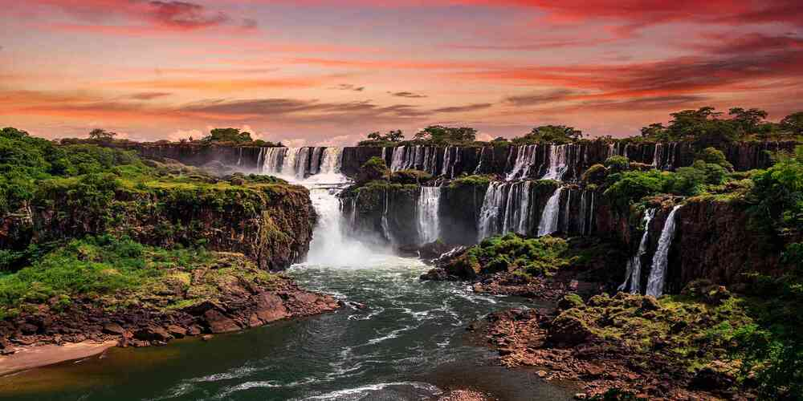

Galeria

Wyspy

Świątynia i góra Fuji

Aleja w Tokyo

Jezioro w górach

Most Karola w Pradze

Tokyo Sanrio Puroland

Santorini

Schönbrunn i Glorietta

Budynek opery w Sydney

Wodospad w górach